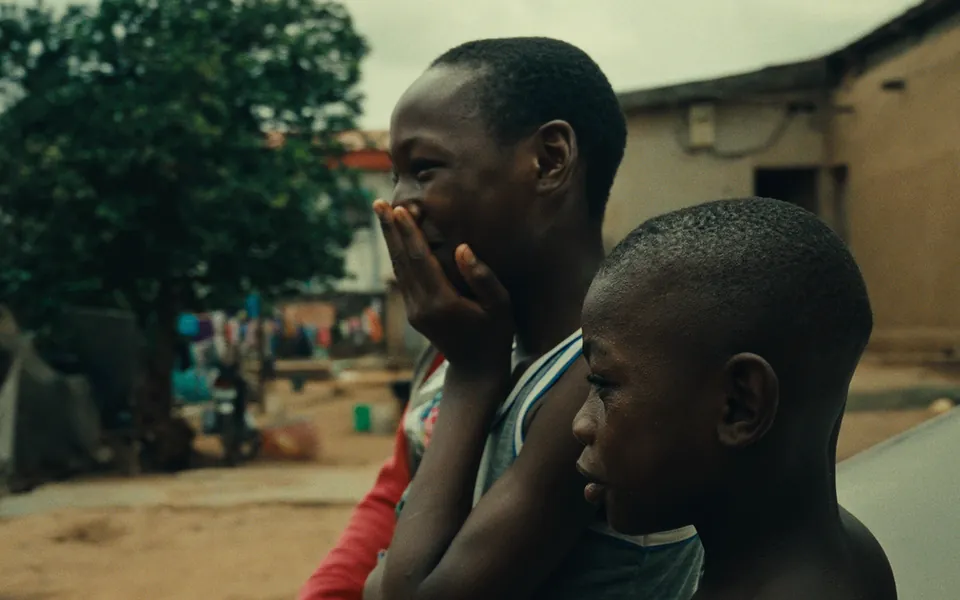
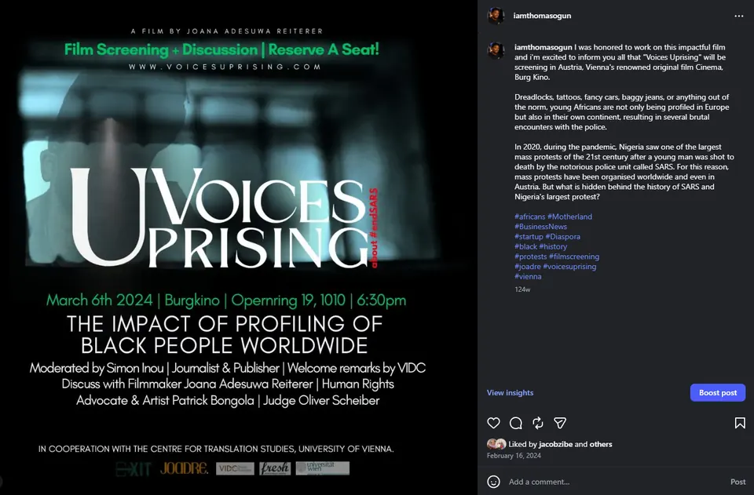
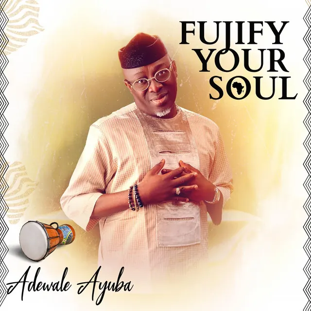
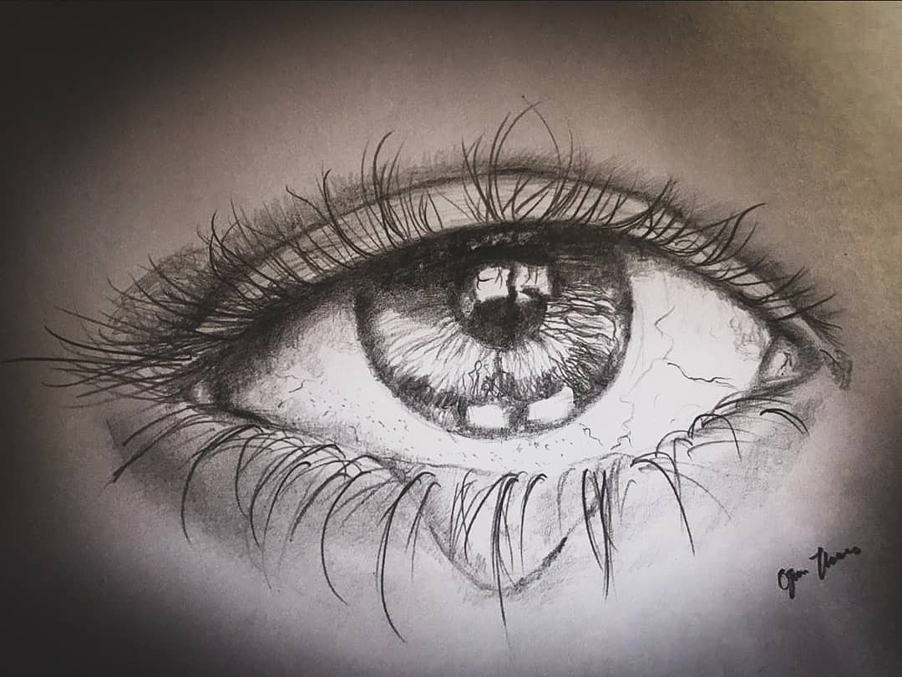
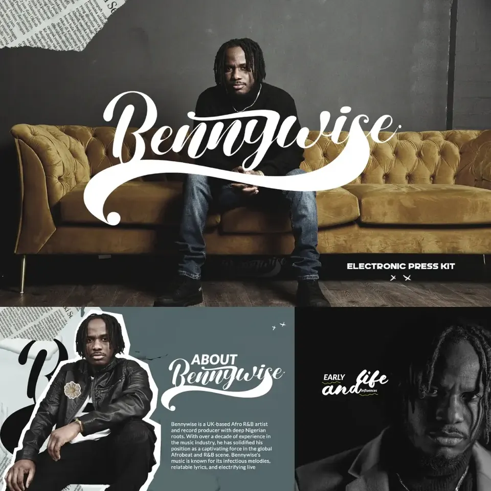

Identity & Spirituality
Physical artworks, sound and two augmented reality installations exploring ancestry, memory and cultural identity.
View ExhibitionOpen Catalogue
Selected Practice
A focused record of visual art, moving image, creative direction and mixed reality.
Practice Highlights
Four routes into the projects, exhibitions and professional records that best represent the practice.
Physical artworks, sound and two augmented reality installations exploring ancestry, memory and cultural identity.
View ExhibitionA music and album campaign connecting visual storytelling, production and release strategy across Lagos and Cape Town.
View Case StudyMoving-image practice developed through cinematography and documentary work, including a film contribution presented in Vienna.
View Voices UprisingA concise record of artistic projects, exhibitions, training, screenings and collaborations.
Download CVFor Professional Review
Use the press page for a concise biography, selected projects, publication credits, catalogue access and direct review enquiries.
Research Timeline
Selected milestones showing how image-making, film, creative direction and technology developed into a connected artistic practice.
Foundation
Established a foundation in form, colour, composition and meaning that continues to shape the work across media.
Studio Research
Developed a stronger focus on identity, memory and human presence through portrait, album and editorial projects.
Prototype
Tested image tracking, animated layers and sound to extend physical artwork into augmented reality.
Campaign
Connected film production and campaign storytelling across Lagos and Cape Town.
Exhibition
Brought physical art, sound and augmented reality together in one audience-facing exhibition experience.
Foundation Across Media
Fine Arts gave me the discipline to understand form, colour, composition and meaning. Cinematography training taught me how to carry those instincts through light, movement and pace.
That foundation now supports a practice across music videos, album artwork, editorial projects and documentary film. Each medium changes, but the intention remains constant: clear storytelling, careful craft and images with lasting presence.

Visual storytelling connecting people, place and emotion across the Nigeria and South Africa campaign.

A film contribution shaped through camera practice and presented in Vienna.

A warm visual identity built around presence, culture and musical character.

Traditional graphite is my direct language for exploring spirituality, identity and the inner life held within the human gaze.

Portraiture, typography and artist narrative shaped into a cohesive electronic press kit.
Completed in 2020, strengthening camera language, lighting and visual pacing.
Fine Arts principles guide work across film, creative direction, editorial projects and mixed reality.